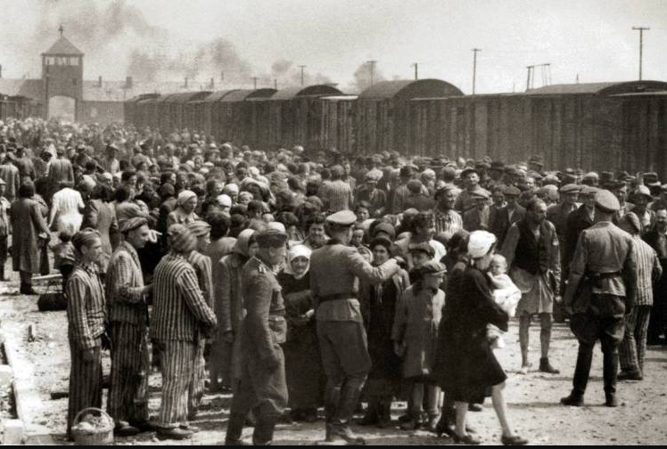

O Holocausto foi a perseguição sistemática e o assassinato de 6 milhões de judeus europeus pelo regime nazista alemão, seus aliados e colaboradores. O Holocausto foi um processo contínuo que ocorreu por toda a Europa entre os anos de 1933 a 1945. O antissemitismo foi a base do Holocausto.
O Holocausto não foi um acontecimento casual e repentino. O genocídio dos judeus pela Europa foi resultado de um longo caminho de perseguição contra essas pessoas e foi consequência direta do forte antissemitismo que existia em todo o continente. No caso da Alemanha, o antissemitismo era muito forte desde o século XIX. Primeiramente existem historiadores que argumentam que genocídios como o Holocausto foram baseados em ações do neocolonialismo. A crueldade e os assassinatos em massa cometidos contra diferentes povos na África deram força prática a ideias antissemitas. Os alemães, inclusive, foram os responsáveis pelo genocídio do povo hererós, que habitava a região da atual Namíbia. No caso dos judeus na Alemanha, o primeiro momento de todo esse processo de extermínio deu-se por meio do discurso de ódio. A retórica contra eles fortaleceu-se no pós-Primeira Guerra e transformou-os em bode expiatório da derrota alemã. Todo tipo de teoria conspiratória passou a ser destilado contra os judeus, e quando os nazistas alcançaram o poder, o discurso virou ação. Assim os judeus foram expulsos do serviço público, depois tiveram suas lojas boicotadas e atacadas. A perseguição nas ruas aumentou consideravelmente, e os casos de violência física começaram a acontecer. Depois eles foram proibidos de casar-se com não judeus, pedidos de cidadania para judeus estrangeiros foram negados, e os judeus alemães tiveram sua cidadania retirada. Os judeus foram privados de liberdade e de todos os direitos enquanto cidadãos. Quando a guerra começou, os nazistas intensificaram o roubo de seus bens e começaram a agrupá-los em guetos, em algumas partes da Europa. Do alto comando do Partido Nazista veio a ordem de extermínio, e daí vieram todos os horrores do Holocausto. Dois momentos marcantes no antissemitismo na Alemanha deram-se com as Leis de Nuremberg e a Noite dos Cristais. Ambas serviram como termômetros importantes do grau de ódio e preconceito contra os judeus e delimitaram o avanço sistemático contra eles na Alemanha.